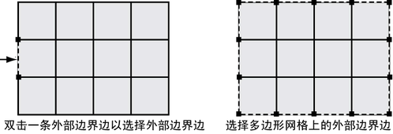
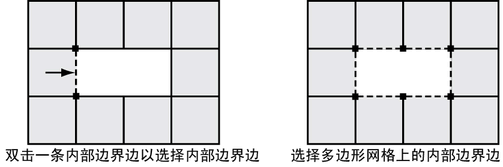
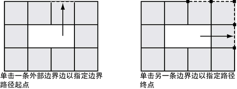

边界边是位于多边形网格的外部或内部周长上的边。边界边选择的工作方式类似于环形和循环边选择类型。根据最初选择的边（外部或内部），将选择沿着多边形网格的关联的边界边。
边界边选择让您无需逐个选择每条边界边。
选择多边形网格上的内部和外部边界边
- 在场景视图中，选择要在其上选择边界边的多边形网格。
选定的多边形网格以绿色高光显示。
- 从“多边形”(Polygons)菜单集中，选择“选择 > 选择边界边工具”(Select > Select Border Edge Tool)。
选定的多边形网格以蓝色高光显示，以指示边选择模式。
- 如果要选择网格的外部边界边，双击多边形网格的外部边。
网格上的外部边界边变为选定。

- 如果要在网格上选择内部边界边，双击多边形网格的内部边。
网格上的内部边界边变为选定。

- 如果需要取消选择特定边，在按住 Ctrl 键的同时单击所需的边。如果要完全取消边选择，单击网格的场景中的任何位置。
注： 也可以单击边界边以创建部分边界选择。例如，如果单击一条外部边界边，然后单击通过沿着网格的边界边连接的第二条外部边界边，则将选择第一次和第二次单击之间的边界边。请参见下面的图表。

提示： 如果需要执行大量的边选择，则可以查看“工具设置”，在各种边界边选择模式之间轻松切换，而无需从“编辑”菜单中重复选择工具项。